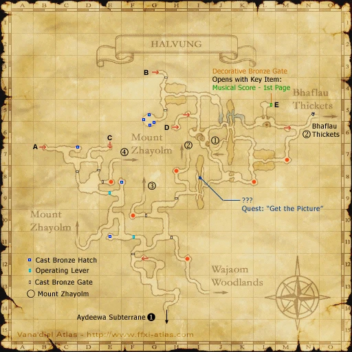
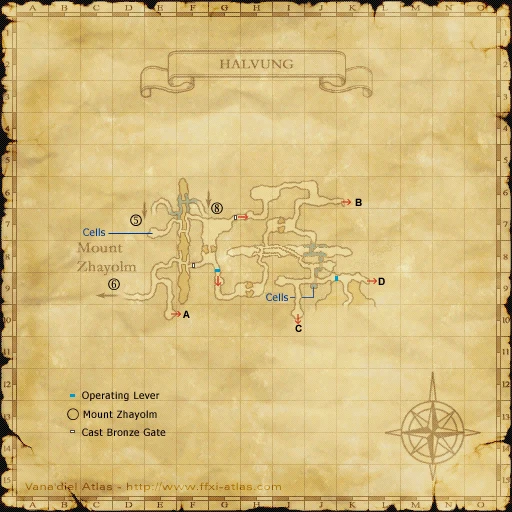
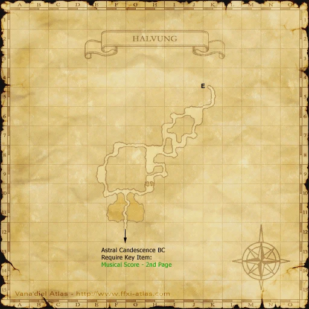
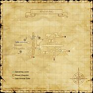
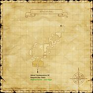
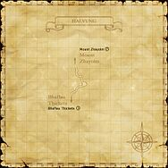

Description
Halvung is a dungeon in Halvung Territory.
Map

Involved in Quests / Missions
| Quest / Mission | Type | Starter | Location |
|---|---|---|---|
| An Imperial Heist | Mythic | Naja Salaheem | Aht Urhgan Whitegate (I-10) |
| Get the Picture | General | Balakaf | Aht Urhgan Whitegate |
| Saga of the Skyserpent | General | Fari-Wari | Aht Urhgan Whitegate |
NPCs
- Allard
- Cast Bronze Hatch
Notorious Monsters
| Name | Level | Drops | Steal | Family | Spawns | Notes |
|---|---|---|---|---|---|---|
| Achamoth | — | Achamoth's Antenna Aurum Sabatons Ice Grip Oracle's Braconi Organics Thunder Grip | — |  WamouraImage source WamouraImage source | 1 | Spawned by: trading Rock Juice at (H-4); A, L, T(H), M |
| Big Bomb | 81-84 | Fire Bomblet Horrent Mace | — |  BombsImage source BombsImage source | — | Spawned by: trading Smoky Flask at (I-8) on Map 2 of Halvung; A, S, M |
| Copper Borer | 81 | Wayang Kulit Mantle | — |  WamouracampaImage source WamouracampaImage source | 1 | First Map (I-13); L, H |
| Dextrose | — | Dextrose's Blubber Ruby Seraweels Achilles' Spear | — |  FlansImage source FlansImage source | 1 | Spawned by: trading Granulated Sugar at (J-6); A, S, JA |
| Dorgerwor the Astute | 80 | Mercenary's Mantle | — |  TrollsImage source TrollsImage source | — | Ranger; A, L, T(S), Sc |
| Farlarder the Shrewd | — | Mercenary's Subligar | — | TrollsImage source | — | Monk; A, L, T(S), Sc |
| Flammeri | — | Musanto | — | FlansImage source | 1 | A, S, JA |
| Gurfurlur the Menacing | — | Mercenary's Ring | — | TrollsImage source | — | Monk; Assisted by: Hilltroll Elite Guard (PLD x2); Assisted by: Woodtroll Elite Guard (RNG x2); A, L, T(S), Sc |
| Kirlirger the Abhorrent | — | Mercenary's Boots | — | TrollsImage source | — | Dark Knight; A, L, T(S), Sc |
| Mythril Mouth Monamaq | — | Volunteer's Earring | — |  MoblinsImage source MoblinsImage source | — | Red Mage; Assisted by: Troll Mythril Guard; A, L, T(S) |
| Reacton | — | Reacton's Ashes Reacton Arm Magic Strap | — | BombsImage source | 1 | Spawned by: trading Bone Charcoal at (?-?); A, S, M |
Regular Monsters


Event Monsters
| Name | Level | Drops | Steal | Family | Spawns | Notes |
|---|---|---|---|---|---|---|
| Hilltroll Mirror Guard | 82-83 | — | — | TrollsImage source | 8 | Archaic Mirror Guard; A, L, S |
| Woodtroll Mirror Guard | 82-83 | — | — | TrollsImage source | 8 | Archaic Mirror Guard; A, L, S |
Maps


Story walkthroughs in this area
| Story | Mission / quest |
|---|---|
| ToAU 2 | Immortal Sentries |
| ToAU 22 | Shield of Diplomacy |
References
External references describe their own server or retail rules. Documented Zenith changes take precedence.
Map credits: Map 1 — HorizonXI Wiki · Map 2 — HorizonXI Wiki · Map 3 — HorizonXI Wiki · Map 4 — HorizonXI Wiki. Original game maps © SQUARE ENIX; redrawn maps retain the credited authorship and license.


Supplemental NPC names and exits are from the base-world snapshot; expansion conditions can affect availability.
Additional level-75 reference







|
Surrounding the base of Mount Zhayolm, the city of Halvung is a military fortification built by the Troll Mercenaries. While defensive foundations and mercenary barracks constructed from heat-resistant materials can be found above the surface, the bulk of Halvung is concentrated underground. The subterranean complex is favored by the mercenaries' employers--a faction of Moblins that splintered from Movalpolos in the distant past. The design of Halvung was based on the mobile homeland of the Moblins, with several modifications to allow for the towering frames of the Trolls. The location of Halvung also brings other benefits--cast metal and jewelry crafted using the abundant geothermal energy of the volcano provide a valuable source of black market income. Connecting Areas
|
Involved in Quests/Missions
|
Quest |
Type |
Starter |
Location |
| Get the Picture | General | Balakaf | Aht Urhgan Whitegate |
| Saga of the Skyserpent | General | Fari-Wari | Aht Urhgan Whitegate |
Mining
| |||||||||||||||||||||||||||||||||
Notorious Monsters Found Here
| Name | Level | Drops | Steal | Family | Spawns | Notes | |||||||
|---|---|---|---|---|---|---|---|---|---|---|---|---|---|
| Big Bomb | Bomb |
(I-8) |
Resists stun. Uses fire spells. | ||||||||||
| Mercenary's Mantle | Troll |
(I-6) |
Often uses Zarbzan attack - Wide AOE for 100-200 dmg. Stoneskin blocks a lot of these. | ||||||||||
| Farlarder the Shrewd (MNK) | Mercenary's Subligar | Troll | |||||||||||
| Kirlirger the Abhorrent (DRK) | Mercenary's Boots | Troll | |||||||||||
Mythril Mouth Monamaq (RDM)
|
Volunteer's Earring | Moblin | |||||||||||
| Gurfurlur the Menacing (MNK) | Mercenary's Ring | Troll | Assisted by: Hilltroll Elite Guard Woodtroll Elite Guard | ||||||||||
|
2 |
Assists: Gurfurlur the Menacing | ||||||||||||
|
2 |
Assist: Gurfurlur the Menacing | ||||||||||||
| 82 - 83 |
8 |
Archaic Mirror Guards | |||||||||||
| 82 - 83 |
8 |
Archaic Mirror Guardians | |||||||||||
|
HP = Detects Low HP; M = Detects Magic; Sc = Follows by Scent; T(S) = True-sight; T(H) = True-hearing JA = Detects job abilities; WS = Detects weaponskills; Z(D) = Asleep in Daytime; Z(N) = Asleep at Nighttime | |||||||||||||
Mobs Found Here
| Name | Level | Drops | Steal | Family | Spawns | Notes | |||||||
|---|---|---|---|---|---|---|---|---|---|---|---|---|---|
| Antares | Unknown | Scorpion | |||||||||||
| Black Pudding | 73 - 75 | Black Pudding | A, S | ||||||||||
| Dahak | Unknown | Dragon | A, S | ||||||||||
| Earth Elemental | Unknown | Elemental | M | ||||||||||
| Ebony Pudding | Unknown | Black Pudding | A, S | ||||||||||
| Fire Elemental | Unknown | Elemental | M | ||||||||||
| Friar's Lantern | 73 - 76 | Bomb | A, S, M | ||||||||||
| Magmatic Eruca | 71 - 75 | Crawler | A, H | ||||||||||
| Moblin Billionaire (RDM) | 76 - 77 | Moblin | A, L, S | ||||||||||
| Moblin Millionaire (WHM) | 70 - 75 | Moblin | A, L, S | ||||||||||
| Purgatory Bat | 70 - 72 | Giant Bat |
3 |
A, H | |||||||||
| Qiqirn Diamantaire (THF) | 72 - 73 | Qiqirn |
1 |
||||||||||
| Qiqirn Mercenary (RNG) | 71 - 73 | Almond | Qiqirn | ||||||||||
| Troll Artilleryman (RNG?) | Unknown | Troll | A, S | ||||||||||
| Troll Cameist (RDM) | 72 - 75 | Troll | A, S | ||||||||||
| Troll Combatant (DRK) | Unknown | Troll | A, S | ||||||||||
| Troll Cuirasser | Unknown | Troll | A, T(S) | ||||||||||
| Troll Engraver (PUP) | 72 - 75 | Troll | A, S | ||||||||||
| Troll Gemologist (PLD) | 71 - 71 | Troll | A, S | ||||||||||
| Troll Grenadier | Unknown | Troll | A, T(S) | ||||||||||
| Troll Ironworker (WAR) | Unknown | Troll | A, S | ||||||||||
| Troll Lapidarist (DRK) | 74 - 74 | Troll | A, S | ||||||||||
| Troll Machinist | Unknown | Troll | A, S | ||||||||||
| Troll Scrimer | Unknown | Troll | A, T(S) | ||||||||||
| Troll Smelter | Unknown | Troll | A, S | ||||||||||
| Troll Stoneworker | 72 - 74 | Troll | A, S | ||||||||||
| Troll Targeteer | Unknown | Troll | A, T(S) | ||||||||||
| Troll's Automaton | 70 - 72 | Automaton | |||||||||||
| Volcanic Bats | 70 - 71 | Bat Trio | A, H | ||||||||||
| Wamoura | 77 - 80 | Wamoura | A, T(H) | ||||||||||
| Wamouracampa | 73 - 76 | Wamoura | |||||||||||
|
HP = Detects Low HP; M = Detects Magic; Sc = Follows by Scent; T(S) = True-sight; T(H) = True-hearing JA = Detects job abilities; WS = Detects weaponskills; Z(D) = Asleep in Daytime; Z(N) = Asleep at Nighttime | |||||||||||||
Adapted from Eden Wiki: Halvung · Contributors and history · CC BY-SA 4.0. Revision 45705. Layout, links and optional background text adapted for Zenith.